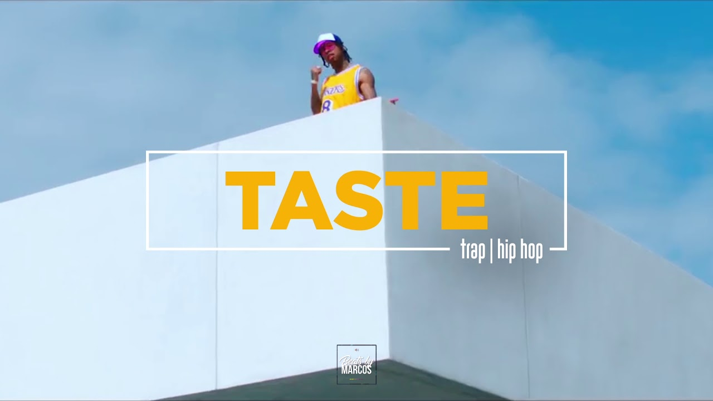

Taste

This trap-influenced, smooth rap song features a verse by Offset. Speaking with DJ Sour Milk on Power 106 LA, Tyga explained, "I sent it to [Offset] and he FaceTimed me and told me the song was crazy and he wanted to hop on it." The track marks the two rappers' first ever collaboration.